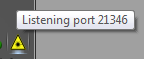
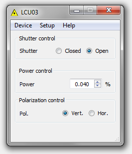

Main window
Software is represented on a desktop as an icon in system tray area, see the image to the right. In order to open the software one may click the icon. After that software main window should appear. Software icon's tooltip shows current software status. "Listening port xxx" means that the software is in remote control mode and can be controld with main Aist-NT sfotware.


Main window
LCU03 software main window contains a few controls dedicated for altering three pieces of hardware.
- Laser shutter
- Power control
- Polarization control
Laser shutter
Laser shutter either blocks laser beam or allows it to go through the system. It has two positions: closed and opened.
Power control
Power control alteres laser beam intensity. Currently used filter allows 1 to 1E-4 intensity attenuation. In order to set laser intensity one should enter desired attenuation value and press Enter.
Polarization control
This controls set allows one to choose between two laser polarizations. Whenever user clicks appropriate radio button laser polarization is changed.